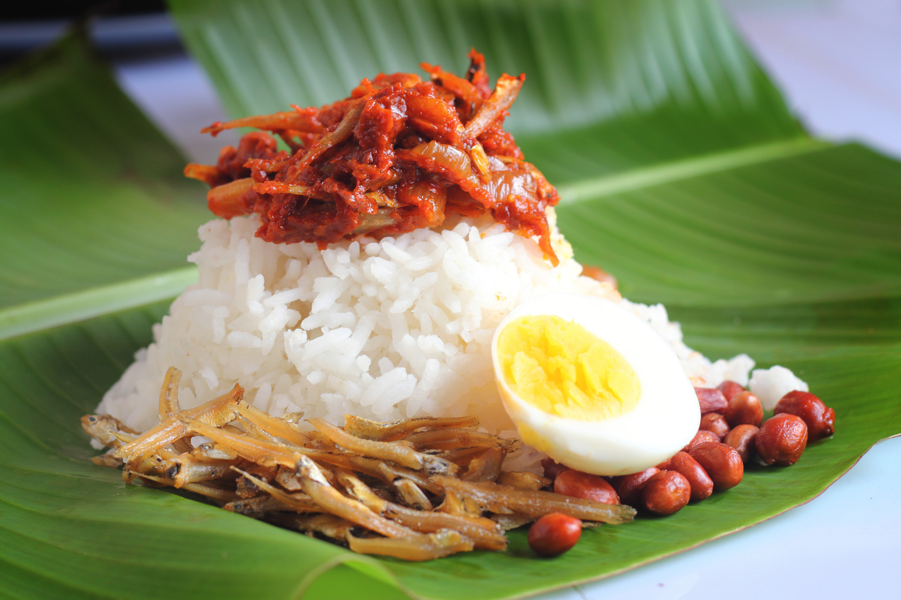

Exploring Malay Cuisines
Discover the Rich Flavors of Malay Food
Malay cuisine is the traditiona food of the ethnic Malays of Southeast Asia, residing in modern-day Malaysia. The main characteristic of traditional Malay cuisine is the generous use of spices. Coconut milk is also important in giving Malay dishes their rich, creamy character. The other foundation is belacan (prawn paste), which is used as a base for sambal, a rich sauce or condiment made from belacan, chili peppers, onions and garlic.

Nasi Lemak
Nasi lemak is a traditional food of the Malays. The dish refers to rice that is cooked using coconut milk to add fat.
Sometimes, fragrant pandan leaves are added while the rice is being cooked to increase its aroma.
Nasi lemak was originally not a mandatory daily breakfast food for the Malaysian Malay community in general.
Nasi Kerabu
Nasi kerabu is a food that originates from the east coast of Malaysia and also the regions in the South of Thailand.
It is a rice dish that is originally bluish in color, and is usually eaten with dried fish or chichen.
The blue color of the rice comes from the petals of the telang flower used in cooking.
There are many variations of Nasi Kerabu based on its color. There are yellow, white, black and blue kerabu rice.
Ketupat
Ketupat is a rice cake packed inside a diamond-shaped container of woven palm leaft pouch.
It is commonly described as "packed rice", although there are other types of similar packed rice such as lontong.
Ketupat is cut open until its skin (woven palm leaf) is totally removed. The inner rice cake is then cut into pieces
and served as a staple food in place or plain steamed rice.
Satay
Satay is a dish of seasoned, skewered and grilled meat, served with a sauce.
Satay can be served in various sauce, but most often we are served in a combination of soy and peanut sauce.
Hence, peanut sauce is often called satay sauce.